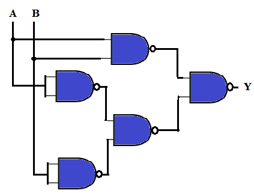
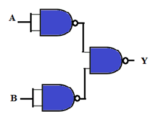
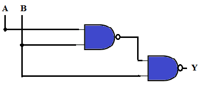
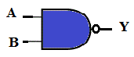
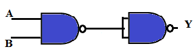
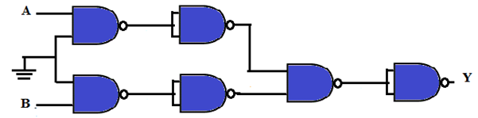

Q1. The combinational circuit for one bit equality checker is shown below. The Boolean expression for output Y is:

A
Y = A'B + AB'
B
Y = AB + A'B'
C
Y = AB + (AB)'
D
Y = A'B' + A
Ans is B
Q.2 The Boolean expression Y = A'BC'D + A'BCD +ABD can be represented by which of the following simplified combinational circuit?
A

B

C

D

Ans is D
Q3. Analyze the combinational circuit given below and find the simplified final output Y.

A
Y = Logic 0
B
Y = Logic 1
C
Y = A.B
D
Y = A + B
Ans is A
Q4. If any one of the inputs of a multiple-input-NAND gate is connected to ground (logic 0) the output is:
A
Logic 0
B
Tristate
C
Logic 1
D
None of these
Ans is C
Q 5. The performance of an application is represented by
Y = [(AB)' + (A+B)']AB'
Apply De Morgan's theorem to this expression and state the simplified output Y.
A
Y = AB
B
Y = (AB)'
C
Y = AB'
D
Y = A'B
Ans is C